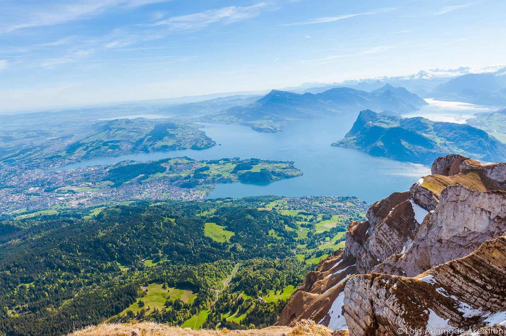
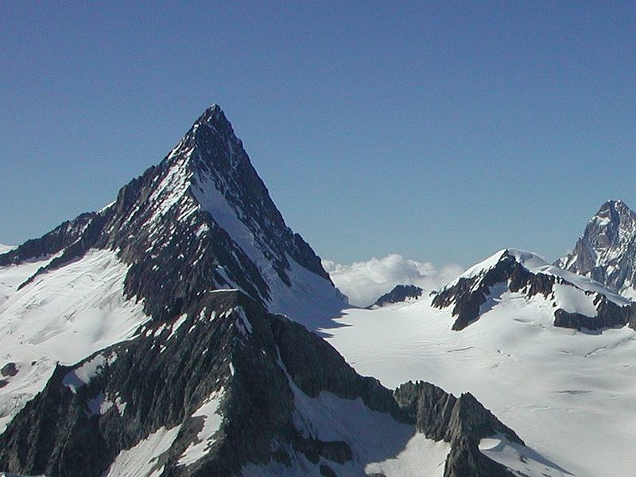

Mt Säntis

Säntis is the highest mountain in the northeastern Switzerland. Säntis is located in the Alpstein range and
is culminating point of the Appenzell Alps. There is a tram to the summit and a hotel and tourist complex.
It offers excellent views to six countries.
Mount Pilatus

Rising from the shore of Lake Lucerne, Pilatus can be reached by both cogwheel railway and tram. The railway,
built in 1889, is the steepest cogwheel railway in the world with an average gradient of 38% and a maximum
gradient of 48%. Because Pilatus is the most prominent peak near Lucerne, it has been a popular tourist
attraction. Notable visitors who have climbed Pilatus include Theodore Roosevelt and Queen Victoria.
Mont Dolent

Located in the Mont Blanc Range, Mont Dolent is distinguished because it lies on the border of three
countries—Italy, France, and Switzerland. First climbed in 1864 by Edward Whymper and Michel Croz, who then
made the first ascent of the Matterhorn in the following year.
Finsteraarhorn

This peak isn’t as visible from the major tourist centers and not as easily recognizable as the neighboring
Eiger, Mönch, and Jungfrau, but the Finsteraarhorn is the highest mountain peak in the Bernese Alps. It was
first climbed in 1829.